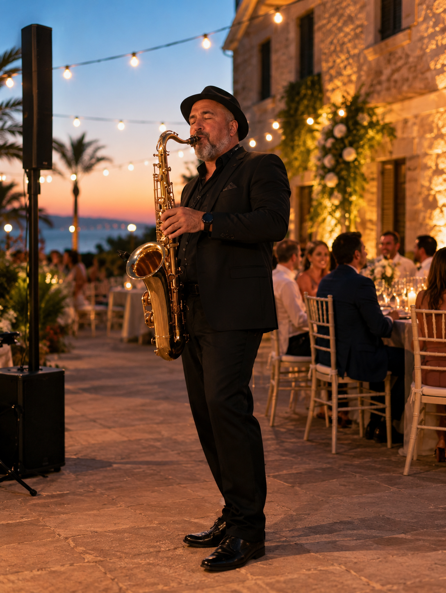
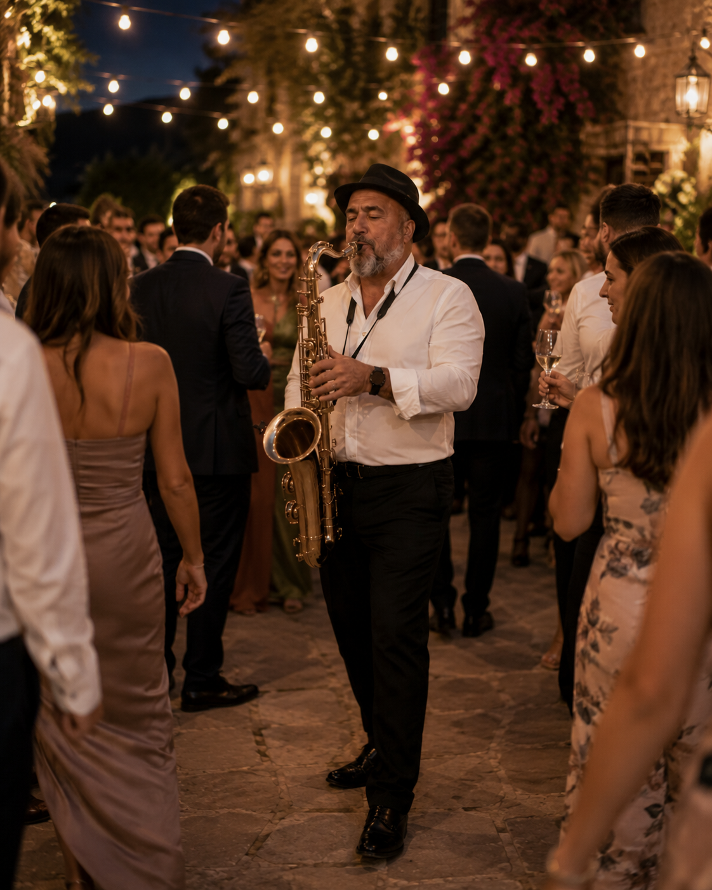

Música en directo para una boda con presencia
El saxofón funciona especialmente bien en bodas porque puede ser íntimo, reconocible y festivo sin perder sofisticación.
La propuesta se adapta al espacio, al horario y al tono de la boda, tanto en fincas y hoteles de Palma como en celebraciones en Alcúdia, Pollença o Port d’Alcúdia.
Momentos donde el saxo encaja
- Ceremonia civil, entrada, salida o momentos simbólicos.
- Cóctel de bienvenida y recepción de invitados.
- Cena, sobremesa o transición hacia la fiesta.
- Apertura de pista o set bailable con una estética cuidada.
Fotos
Ambientes de boda con saxo en directo.


También